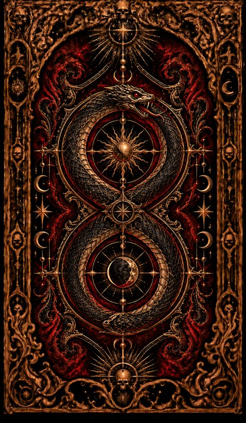
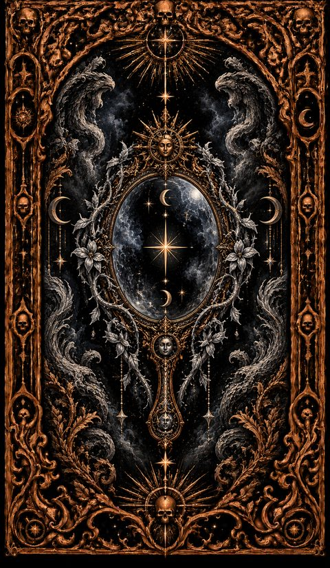
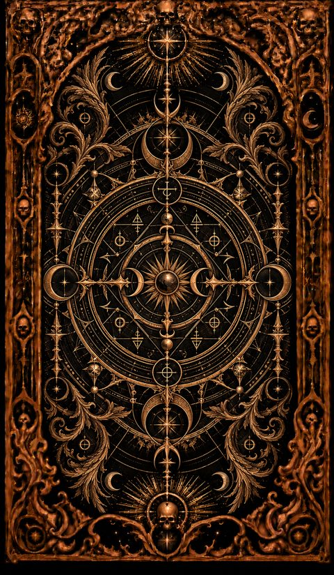

LE MIROIR D’OBSIDIENNE · ALOE MIA
Regarder l’ombre.
Choisir la transformation.
Une carte ne prononce pas une sentence : elle ouvre une question.
Fermer le cercle
Notez ce que vous avez vu, ce que vous avez compris et l’action que vous choisissez. Puis respirez.
Un outil d’introspection et de travail de l’ombre. Il ne remplace pas un accompagnement médical ou psychologique.
LUMIÈRE · OMBRE · TRAVAIL INTÉRIEUR
Le grimoire des arcanes
Les illustrations et les textes originaux de vos grimoires. Ouvrez une carte pour en explorer la lumière et l’ombre.



DISPONIBLE MAINTENANT · PDF
Le grimoire numérique
7 € · 37 pages
- Le rituel de base et l’architecture des Trois Royaumes
- Les 26 cartes du Miroir, une page chacune, avec leur illustration
- Pour chaque arcane : Lumière, Ombre, Message de l’Ombre et Action
- Trois lectures commentées et une page pour fermer le cercle
Paiement sécurisé par PayPal. Le PDF est envoyé sous 24 h à l’adresse e-mail de votre compte PayPal. En achetant, vous demandez la livraison du fichier et renoncez à votre droit de rétractation pour ce contenu numérique.
EMPORTER LE RITUEL
Les éditions ALOE MIA
Découvrez les trois éditions. Les prix et la date d’ouverture seront annoncés après validation de la fabrication et de l’expédition à la demande.
LES TROIS ÉDITIONS ARRIVENT
Le premier à entrer dans le cercle
Recevez l’annonce d’ouverture des commandes pour les éditions Basique, Complet et Deluxe.
Une adresse e-mail et votre accord, dans un formulaire Google. Inscription gratuite, sans réservation ni paiement. Votre adresse reste privée et sert uniquement à cette annonce.
LE TAROT DE MIA
Tirée chaque matin, à Nice
Mia tire une carte ALOE MIA chaque jour et partage ce qu’elle y voit. Retrouvez sa carte du jour, ses rituels et les coulisses du jeu sur Instagram.
FAIRE GRANDIR ALOE MIA
Soutenir les prochaines créations
Vous appréciez cet univers ? Un soutien volontaire aide ALOE MIA à développer de nouvelles créations et à faire vivre ce projet.
Choisissez votre montant sur PayPal. Ce soutien est indépendant des achats : il ne réserve aucun pack et ne constitue pas une précommande. Les tirages restent accessibles sans contribution.